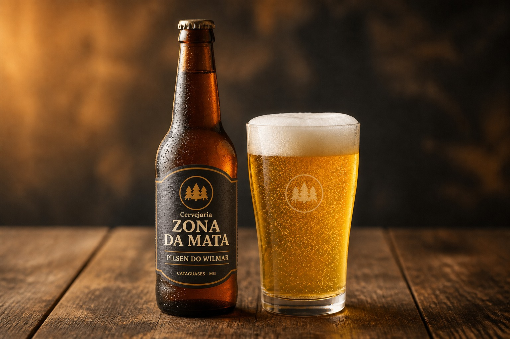
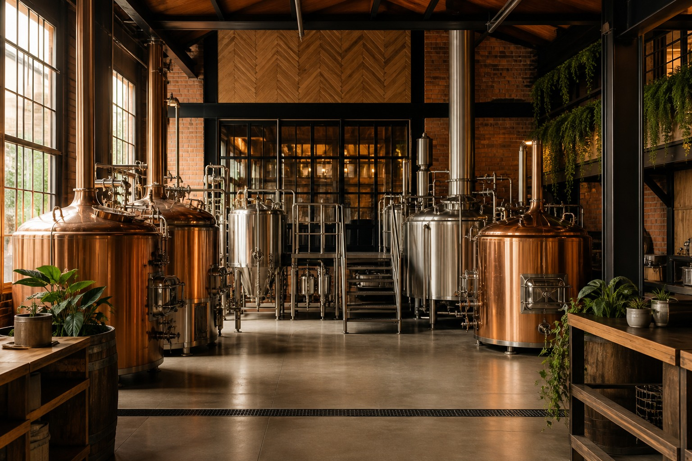
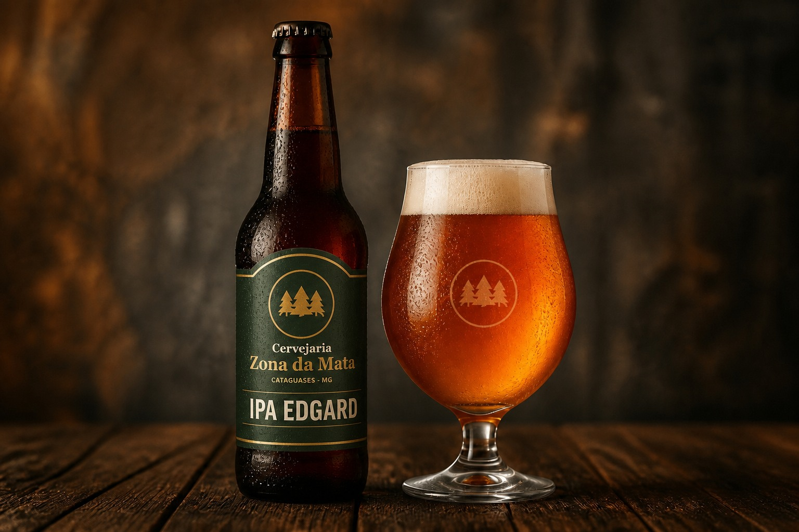
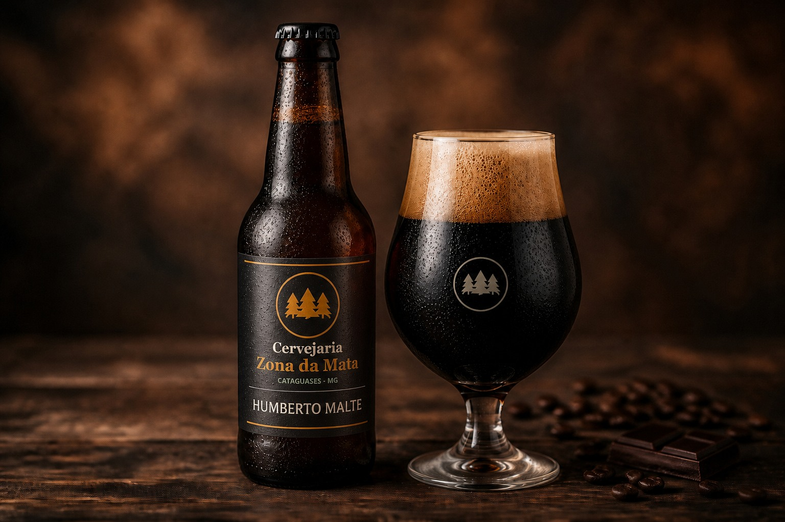

Pilsen do Wilmar
Leve, dourada e refrescante. Feita para celebrar os bons encontros.

Sabores marcantes, ingredientes selecionados e produção local.
Conheça nossas cervejas
A Cervejaria Zona da Mata nasceu na serra, inspirada pela natureza e movida pela paixão por boas cervejas. Valorizamos ingredientes selecionados, produção local e o cuidado em cada detalhe do processo. Mais que cerveja, criamos experiências para celebrar momentos e conexões.

Leve, dourada e refrescante. Feita para celebrar os bons encontros.

Aromática e intensa, com notas cítricas e amargor marcante.

Encorpada e cremosa, com notas de café, chocolate e malte torrado.